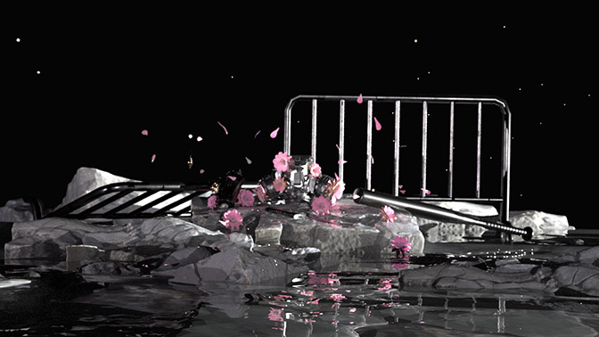
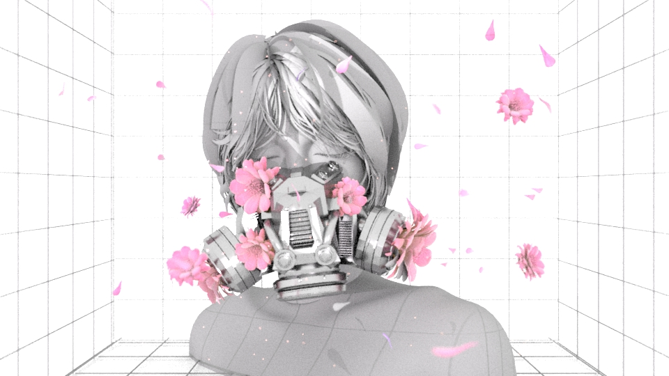

PROJECT
WELCOME TO THE CITY OF EXPIRED TEAR GAS
(2021)
SKILLS
3D Modelling
Graphic Design
Product Design
RELEVANT SOFTWARE
Autodesk Maya
Photoshop
After Effects
SYNOPSIS
This body of work features sketches and designs of cyberpunk respirators for application in a 3D setting for rendering, animation, and 3D printing.. 2D artwork of the respirators are used as part of character designs and even printed onto fashionable cloth masks.
PROCESS
After a cyberpunk conflict, the Flower Respirator is placed among a pile of rubble, framed by toppled crowd control barriers. The tear gas canisters, baseball bat, and knife are placed around the respirator as a sign of reverence.
PROCESS
The 3D respirator model made in Maya through creating simple polygons like rectangles and cylinders together. The respirator was then combined with open sources models from Sketchfab to create a scene which was animated in Maya.

PROCESS
The lotus flower and cherry blossom is a recurring theme in many of my artworks. In East Asian culture, the cherry blossom represents peace - the lotus flower, rebirth.
PROCESS
The early mask designs explored drew upon modern day fashions and visuals to imply a near future world. Respirators implied a cyberpunk dystopia choked with tear gas. The soft pinks and whites of both flowers and their combination with the mechanical mask implies that the fight against injustice requires more than a wish for peace.